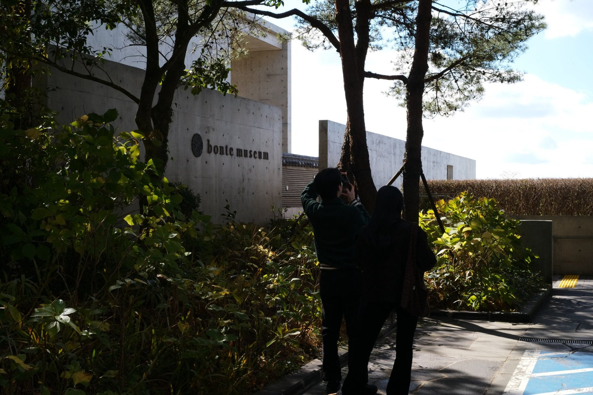
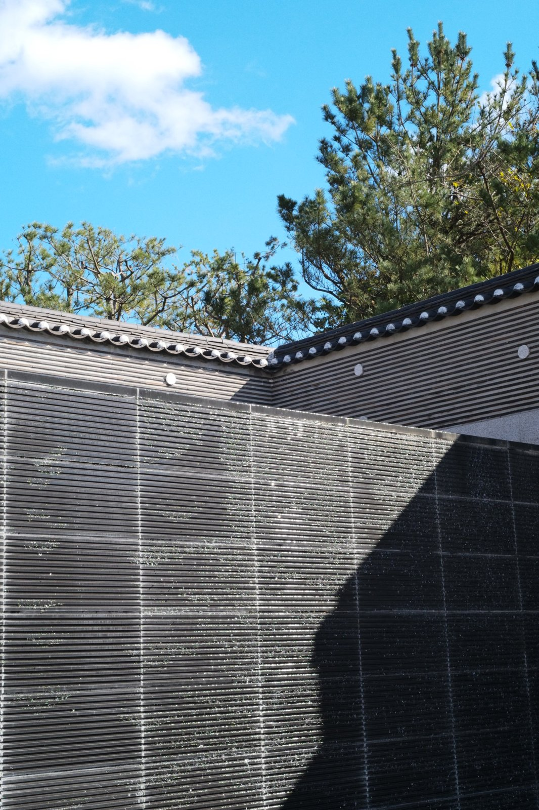
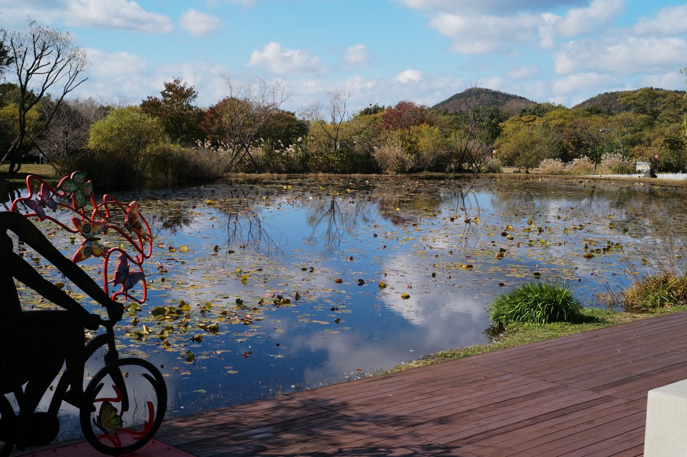
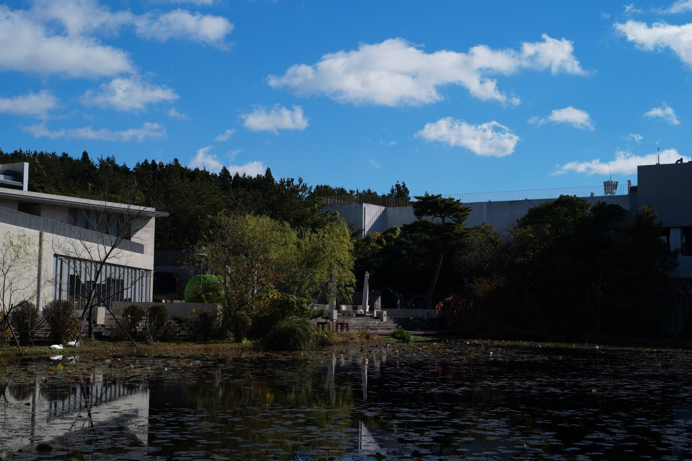

2026.11.22
점은 쌓이고, 합의는 뒤따른다
본태박물관에서 만난 쿠사마 야요이의 호박과 무한 거울방. 합의는 가치를 확정하지만 발명하지는 못합니다.
본태, 과거와 현재를 잇는 일
서귀포 안덕면의 산자락, 본태박물관의 첫인상은 이어짐이었습니다. 안도 다다오는 노출 콘크리트로 건물을 지었지만, 그 안에 담긴 것은 조선시대의 공예품입니다. 가장 현대적인 소재로 가장 오래된 것을 품어야 했으니, 그 중심을 잡기까지 고민이 많았을 것입니다.


그 고민의 답은 1관으로 들어서는 길에 있었습니다. 콘크리트 벽을 따라 기와를 얹은 담장이 이어지고, 그 담을 따라 걷는 몇 걸음 동안 시간이 거꾸로 흐릅니다. 입장하는 과정 자체가 과거로 들어가는 시간 여행이었습니다.


그리고 3관에 쿠사마 야요이가 있습니다. 2014년부터 이곳을 지켜온 「호박」(2013)과 「무한 거울방, 영혼의 광채」(2008) 두 점입니다. 옛것과 새것이 만나는 이 건물에서, 그녀는 또 다른 종류의 시간을 보여줍니다.

그녀는 올해 8월, 97세로 세상을 떠났습니다. 그래서 이번에는 조금 다른 질문을 품고 그 앞에 섰습니다. 이 작품들의 가치는 어디서 오는 걸까요. 사람들이 그렇다고 합의했기 때문일까요.
호박, 작업의 축적
노란 몸체 위로 검은 점이 촘촘하게 이어집니다. 점은 곡면을 따라 커졌다 작아지며, 딱딱한 조각에 숨 같은 부피감을 만듭니다. 자세히 볼수록 그 점들이 하나하나 다르다는 것을 알게 됩니다.

호박은 그녀에게 유년의 기억이었습니다. 마쓰모토의 종자 농장에서 자라며 처음 그린 호박은, 뉴욕을 거쳐 도쿄로 돌아온 뒤에도 끊임없이 다시 나타났습니다. 본태의 호박은 그 긴 줄의 한 점일 뿐입니다.
그래서 이 호박 앞에서 제가 보는 것은 한 점의 조각이 아니라 축적입니다. 층층이 쌓인 점, 수십 년 동안 같은 모티프로 돌아온 한 사람의 시간. 반복은 여기서 강박이기 전에 성실함입니다.
어떤 작품이 훗날 재발견된다는 것은 발견될 무언가가 이미 거기 있었다는 뜻입니다. 축적은 아무도 보지 않을 때에도 자랍니다.
인피니티 미러룸, 감각적 충격
저는 이 방에 대해 거의 아는 것 없이 들어갔습니다. 문이 닫히면 어둠이 먼저 오고, 곧 무수한 점의 빛이 사방으로 끝없이 펼쳐집니다. 벽이 어디서 끝나는지 알 수 없습니다.
처음 든 느낌은 어머니의 자궁 같다는 것이었습니다. 어둡고 아늑하며, 경계가 없는 곳. 무한히 번지는 점의 향연이 잠시 정신을 얼얼하게 만들었고, 그 사이 저도 모르게 무아의 명상 속으로 빠져들었습니다.
쿠사마가 평생 말해온 '자기 소멸'은 여기서 개념이 아니라 몸의 감각이 됩니다. 그녀가 바라보던 세상은 이런 모습이 아니었을까요. 짧은 시간이었지만, 그녀의 자리에 서서 세상을 상상해 볼 수 있었습니다.
이 방은 설명보다 먼저 도착합니다. 작가도 미술사적 맥락도 모르던 제게 그랬듯, 처음 들어서는 누구에게나 같은 경험을 건넵니다. 감각적 충격은 합의가 필요 없는 언어입니다.
문을 나서면 다시 안도의 회색 벽입니다. 채움과 비움이 문 하나를 사이에 두고 마주합니다.

합의는 확정하지만 발명하지 못한다
1960년대 뉴욕의 쿠사마는 주변부에 있었습니다. 1973년 일본으로 돌아왔고, 1977년부터는 스스로 병원에 머물며 길 건너 작업실로 출근했습니다. 세상이 그녀를 다시 부른 것은 1990년대에 들어서였습니다.
그 사이 작품은 바뀌지 않았습니다. 바뀐 것은 작품을 바라보는 사람들의 합의였습니다. 미술관과 비평가, 컬렉터가 한목소리로 그녀의 이름을 부르기 시작했고, 가격은 그 목소리를 따라 올랐습니다.
그렇다면 가치는 합의일까요. 본태의 두 작품 앞에서 저는 반만 그렇다고 답합니다. 합의가 허공에서 생겨났다면 어느 날 같은 자리로 흩어졌을 것입니다.
합의가 돌아올 자리에는 두 가지가 먼저 있었습니다. 수십 년 동안 쌓인 작업의 축적, 그리고 처음 보는 사람에게도 가 닿는 감각적 충격. 호박은 앞의 것을, 미러룸은 뒤의 것을 보여줍니다.
합의는 가치를 확정하지만 발명하지는 못합니다. 점은 혼자 쌓이고, 합의는 늦게 도착합니다. 쿠사마 야요이의 일생은 그 순서를 가장 선명하게 보여준 사례입니다.

